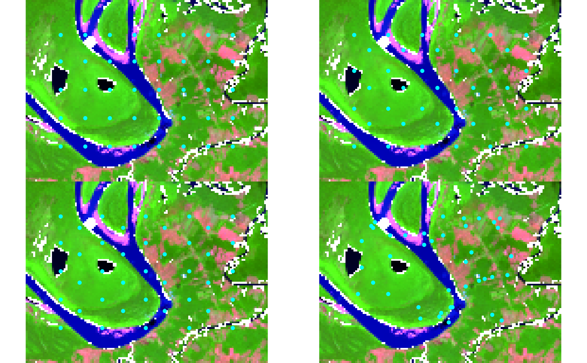
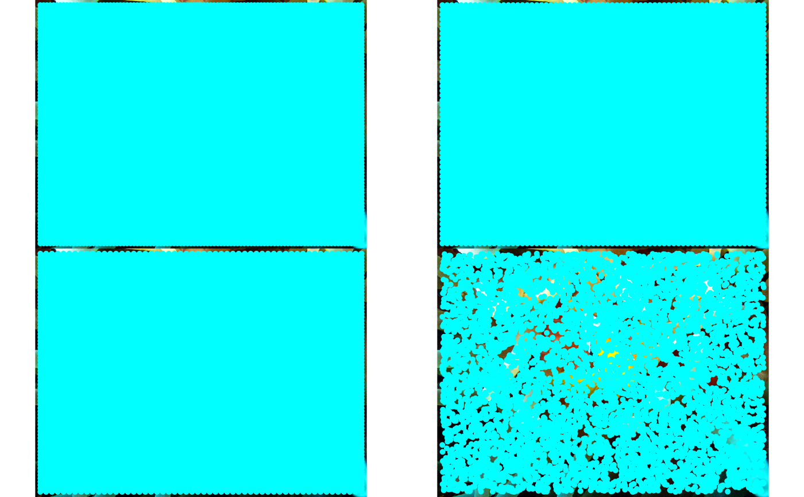

Generate seed locations on an image following one of four spatial
arrangements used in SNIC (Simple Non-Iterative Clustering) segmentation:
rectangular, diamond, hexagonal, or random. Works for both numeric arrays
and SpatRaster objects.
Usage
snic_grid(
x,
type = c("rectangular", "diamond", "hexagonal", "random"),
spacing,
padding = spacing/2,
...
)
snic_count_seeds(x, spacing, padding = spacing/2)Arguments
- x
Image data. For arrays, this must be numeric with dimensions
(height, width, bands). ForSpatRasterobjects, raster dimensions are inferred automatically.- type
Character string indicating the spatial pattern to generate. One of
"rectangular","diamond","hexagonal", or"random".- spacing
Numeric or integer. Either one value (applied to both axes) or two values
(vertical, horizontal)giving the spacing between seeds in pixels.- padding
Numeric or integer. Distance from image borders within which no seeds are placed. May be of length 1 or 2. Defaults to
spacing / 2.- ...
Currently unused; reserved for future extensions.
Value
A data frame containing:
r,cwhenxhas no CRS.lat,lonwhenxhas a CRS, expressed inEPSG:4326.
Details
The spacing parameter controls seed density. Padding shifts the
seed grid inward so that seeds are not placed directly on image borders.
The spatial arrangements are:
rectangular: regular grid aligned with rows and columns.diamond: alternating row offsets, forming a diamond layout.hexagonal: alternating offsets approximating a hexagonal tiling.random: uniform random placement with similar expected density.
The helper snic_count_seeds estimates how many seeds would be
generated for a rectangular lattice with the given spacing and padding,
without computing coordinates. For type = "diamond" or
"hexagonal", the actual number of seeds will be up to roughly
twice this estimate (minus boundary effects). For "random", the
estimate corresponds to the expected density.
If x has a coordinate reference system, the returned data frame
includes geographic coordinates (lat, lon) in EPSG:4326.
Examples
# Example 1: Geospatial raster
if (requireNamespace("terra", quietly = TRUE)) {
# Load example multi-band image (Sentinel-2 subset) and downsample
tiff_dir <- system.file("demo-geotiff",
package = "snic",
mustWork = TRUE
)
files <- file.path(tiff_dir, c(
"S2_20LMR_B02_20220630.tif",
"S2_20LMR_B04_20220630.tif",
"S2_20LMR_B08_20220630.tif",
"S2_20LMR_B12_20220630.tif"
))
s2 <- terra::aggregate(terra::rast(files), fact = 8)
# Compare grid types visually using snic_plot for immediate feedback
types <- c("rectangular", "diamond", "hexagonal", "random")
op <- par(mfrow = c(2, 2), mar = c(2, 2, 2, 2))
for (tp in types) {
seeds <- snic_grid(s2, type = tp, spacing = 12L, padding = 18L)
snic_plot(
s2,
r = 4, g = 3, b = 1, stretch = "lin",
seeds = seeds,
main = paste("Grid:", tp)
)
}
par(mfrow = c(1, 1))
# Estimate seed counts for planning
snic_count_seeds(s2, spacing = 12L, padding = 18L)
par(op)
}

# Example 2: In-memory image (JPEG)
if (requireNamespace("jpeg", quietly = TRUE)) {
img_path <- system.file(
"demo-jpeg/clownfish.jpeg",
package = "snic",
mustWork = TRUE
)
rgb <- jpeg::readJPEG(img_path)
# Compare grid types visually using snic_plot for immediate feedback
types <- c("rectangular", "diamond", "hexagonal", "random")
op <- par(mfrow = c(2, 2), mar = c(2, 2, 2, 2))
for (tp in types) {
seeds <- snic_grid(rgb, type = tp, spacing = 12L, padding = 18L)
snic_plot(
rgb,
r = 1, g = 2, b = 3,
seeds = seeds,
main = paste("Grid:", tp)
)
}
par(mfrow = c(1, 1))
par(op)
}
